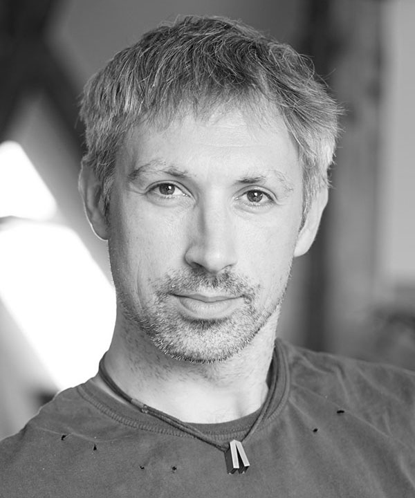
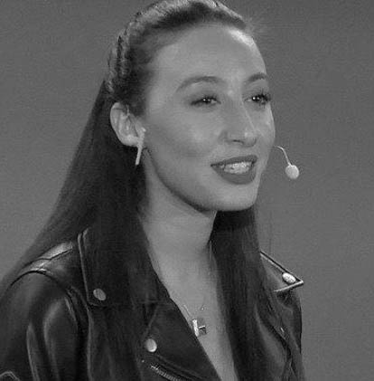
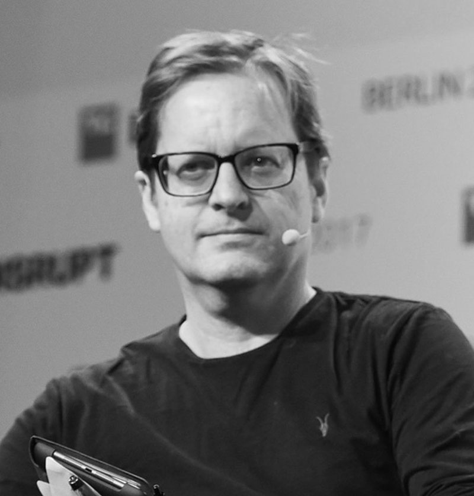

Melonport and MAMA present
M-1
Asset Management 3.0

07 & 08 Feb 2019
No sponsors. Content only.
Zug, Switzerland
If you are a developer or student, you can apply for a discounted ticket (CHF300) by sending an email to m-1@melonport.com with a short paragraph about yourself and - if applicable - a link to your Github.
Our Philosophy
After laying down the framework for asset management 3.0 at M-0, it is time to re-group the key ecosystem players together once again to examine the progress we have made in the last year and, more importantly, focus our attention on the years to come.
Together, we are building the financial operating system of the future. This is fast-becoming a future where each person can hold custody of their own wealth. A future without costly intermediation. A future where you can interact with other players of the global financial system in a fair and transparent way regardless of your geographic or socioeconomic background. A future where no single institution or group of institutions has control over the assets we all share.
Agenda
The M-1 journey
KEYNOTES:
-
A history of money: from metal to Melon
Dylan GriceHead of Liquid Investments Calibrium AGRead Bio✕Dylan GriceHead of Liquid Investments Calibrium AG
Dylan Grice is the Head of Liquid Investments at Calibrium AG, a Private investment Office based in Zurich. Prior to moving to Switzerland he was a banker in London, enjoying spells as a market strategist and a proprietary trader. He is a graduate of the London School of Economics.
About Calibrium AGCalibrium is a private investment office. It works in the interest of a European family. Calibrium operates with a long-term horizon and strives to provide the highest quality investment and financial services. -
Transitioning Melon from Ethereum to Substrate
Dr. Gavin WoodFounder/President Web3 FoundationRead Bio✕Dr Gavin WoodFounder/President Web3 Foundation
Dr. Gavin Wood is the Co-Founder of Parity Technologies and President of Web3 Foundation. Gavin is developing the next generation of blockchain tech with Polkadot, the interoperability platform of public/private app-specific blockchains to power a decentralized web 3.0 that will disrupt centralized internet powers and provide a platform for developers to create more equitable, peer-to-peer societal institutions that are not possible today. To help foster blockchain innovation, Gavin recently released blockchain-building tech Substrate.
Gavin began originating blockchain technology as Co-Founder and CTO of Ethereum. He designed and stewarded the Solidity language, invented Proof-of-Authority consensus, and designed and implemented the Whisper protocol. -
Governance: Unveiling of the Melon Council
Jenna ZenkCTO MelonportRead Bio✕Jenna ZenkCTO Melonport
Jenna is a software engineer with a background in financial markets and experience in asset management. She graduated from ESCP Europe in Paris, with a Master in Management and Financial Engineering. Prior to joining Melonport, she worked in the hedge fund industry, both in Paris and New York. Her involvement in the Ethereum ecosystem and passion for decentralization and crypto-economics got her into programming. She learned fullstack javascript at Fullstack Academy of Code in New York. With both financial and technical knowledge, Jenna is devoted to build Melon as the new standard in asset management.
About MelonportMelonport AG is the private company behind the Melon Protocol, an on-chain tool for individuals as well as institutions to set up and manage hedge funds of digital assets. -
Challenging Melonomics
Ryan ZurrerBoard Member Web3 FoundationRead Bio✕Ryan ZurrerBoard Member Web3 Foundation
Ryan is an executive that works to realize outlier returns for stakeholders in token-enabled decentralized consensus networks that leverage blockchain technology.
After decade working in renewable energy focused on the negotiation, development, execution and operation of utility-scale renewable generation assets, I discovered Bitcoin in late 2012 and subsequently became very passionate about the Ethereum ecosystem and blockchain technology generally. I began as an Angel Investor supporting start-ups developing deeply compelling innovations with blockchain-enabled networks. Today, my focus is on finding great projects and technical teams that could realize significant network effects with the right tokenization strategy for the Polychain Capital fund as well as finding great investment partners to help Polychain Capital continue its outlier growth.
-
Bring your own governance model to Aragon
Jorge IzquierdoCTO Aragon OneRead Bio✕Jorge IzquierdoCTO Aragon One
Jorge is a cofounder of the Aragon Project and currently is the CTO of Aragon One, mostly focused on technology research. Before Aragon, Jorge was a mobile app developer and a tinkerer with any interesting tech he would learn of.

On-chain asset management, and where do we go from here?
-
Mona El IsaCEO MelonportRead Bio✕Mona El IsaCEO Melonport
Mona El Isa is a former star-trader at Goldman Sachs, promoted to Vice President by the age of 26 and made the “top 30 under 30” list in Trader Magazine in 2008 and Forbes Magazine in 2011 after profitably trading the 2008 and 2011 crashes. After that, she moved to Geneva-based macro fund Jabre Capital in 2011, before deciding in 2014 that the future of finance lay in blockchain technology. She studied Economics & Statistics at the University College London.
About MelonportMelonport AG is the private company behind the Melon Protocol, an on-chain tool for individuals as well as institutions to set up and manage hedge funds of digital assets. -
Jenna ZenkCTO MelonportRead Bio✕Jenna ZenkCTO Melonport
Jenna is a software engineer with a background in financial markets and experience in asset management. She graduated from ESCP Europe in Paris, with a Master in Management and Financial Engineering. Prior to joining Melonport, she worked in the hedge fund industry, both in Paris and New York. Her involvement in the Ethereum ecosystem and passion for decentralization and crypto-economics got her into programming. She learned fullstack javascript at Fullstack Academy of Code in New York. With both financial and technical knowledge, Jenna is devoted to build Melon as the new standard in asset management.
About MelonportMelonport AG is the private company behind the Melon Protocol, an on-chain tool for individuals as well as institutions to set up and manage hedge funds of digital assets. -
Simon E. SchmidHead of UX/Front-End MelonportRead Bio✕Simon E. SchmidHead of UX/Front-End Melonport
Simon worked for more than 10 years as a Full Stack Software Engineer where he gained a profound and extensive knowledge on how to develop user interfaces that are fascinating and comprehensible to use.
About MelonportMelonport AG is the private company behind the Melon Protocol, an on-chain tool for individuals as well as institutions to set up and manage hedge funds of digital assets. -
Travis JacobsBlockchain Developer MelonportRead Bio✕Travis JacobsBlockchain Developer Melonport
Before building smart contracts with Melonport, Travis' interest in open source software led him to code with the OpenWorm project, under Google's sponsorship. He then wrote his Master's in Bioengineering at Imperial College London, attending Ethereum's Devcon One during this period. Travis is now dedicated to developing the Melon Protocol, and fostering the growth of the surrounding community.
About MelonportMelonport AG is the private company behind the Melon Protocol, an on-chain tool for individuals as well as institutions to set up and manage hedge funds of digital assets.
-
Matthias GemperliSoftware Developer MelonportRead Bio✕Matthias GemperliSoftware Developer Melonport
Matthias worked for more than seven years as a frontend developer and consultant in various industries. Starting with smaller websites, he eventually developed larger high scalable web applications. Before he joined Melonport he worked for a Swiss e-commerce startup in Zurich. Away from the computer you can find him skiing or climbing in the mountains.
About MelonportMelonport AG is the private company behind the Melon Protocol, an on-chain tool for individuals as well as institutions to set up and manage hedge funds of digital assets. -
Gautham NekkantiBlockchain Developer MelonportRead Bio✕Gautham NekkantiBlockchain Developer Melonport
Gautham is a blockchain developer with passion and experience in free and open-source software (FOSS). He was a Google Summer of Code student and a mentor. He is a finalist among more than 3 thousand participants at a national level innovation contest by Accenture for his project in blockchain based digital records that can be integrated with traditional government systems.
About MelonportMelonport AG is the private company behind the Melon Protocol, an on-chain tool for individuals as well as institutions to set up and manage hedge funds of digital assets. -
Sebastian SiemssenSoftware Developer MelonportRead Bio✕Sebastian SiemssenSoftware Developer Melonport
Sebastian is a polyglot software developer and speaker with experience in a broad range of modern web technologies. Before joining Melonport as a contractor and consultant, he studied human medicine in Vienna and worked as lead engineer and chief technology officer at various digital agencies in Austria and Switzerland. Sebastian's passion for open source software has led him to contribute to many popular projects as well as found and host local development communities. Over the years, he has obtained a track record as a speaker at multiple international conferences.
About MelonportMelonport AG is the private company behind the Melon Protocol, an on-chain tool for individuals as well as institutions to set up and manage hedge funds of digital assets. -
John OrthweinHead of Risk Engineering MelonportRead Bio✕John OrthweinHead of Risk Engineering Melonport
John has spent has spent the last 12 years working in the Investment Management industry with liquid alternatives at LGT Capital Partners, and before that, as an analyst at Man Investments. Previously, John was a software engineer developing distributed, high-availability enterprise systems for pension funds and companies such as SUN Microsystems, PIMCO, State Street, Allianz and Lufthansa Systems. He holds MA and BA degrees in economics from Miami University. John will be working to design and build out the Melon Protocol’s Risk Engineering capabilities.
About MelonportMelonport AG is the private company behind the Melon Protocol, an on-chain tool for individuals as well as institutions to set up and manage hedge funds of digital assets.
Securing the Future of Finance
-
Matthew Di FerranteFounder ZK LabsRead Bio
-
Martin LundfallFormal Verification Researcher at Dapphub, MakerDAO and CirclesUBIRead Bio✕Martin LundfallFormal Verification Researcher at Dapphub, MakerDAO and CirclesUBI
Martin Lundfall is a formal verification researcher at Dapphub, MakerDAO and CirclesUBI. Before joining Dapphub, he was the main developer of TransActive Grid, a peer-to-peer energy market that later developed into Grid+. His background is in mathematics, computer science, physics and brain computer interfacing.
The asset tokenization thesis
-
 Talal TabbaaCOO and Co-founder Jibrel NetworkRead Bio✕
Talal TabbaaCOO and Co-founder Jibrel Network
Talal TabbaaCOO and Co-founder Jibrel NetworkRead Bio✕
Talal TabbaaCOO and Co-founder Jibrel Network
Talal Tabbaa is the co-founder and COO at Jibrel Network, a blockchain platform for the tokenization of financial assets. Prior to co-founding Jibrel, Talal was a Senior Management Consultant at Pricewaterhouse Coopers UAE and managed a private investment fund for a private office in Saudi Arabia. By education, Talal is Industrial Engineering from Purdue University.
About Jibrel NetworkJibrel provides traditional financial assets such as currencies, commodities, debt instruments and securities, as standard ERC-20 tokens, on the Ethereum blockchain. Jibrel AG is a public limited company domiciled in Zug, Switzerland, which successfully conducted a 30 million USD token sale during 2017. Jibrel is an SRO member under VQF in Zug, Switzerland, part of the Dubai International Financial Center Fintech Accelerator, and the Regulatory Sandbox of the Central Bank of Jordan. -
Zoe AdamoviczCEO and Co-founder NeufundRead Bio✕Zoe AdamoviczCEO and Co-founder Neufund
CEO and co-founder at Neufund. Being a Blockchain regulatory & security tokens experts Zoe actively advises to German and Maltese governments on DLT frameworks. Former Co-founder and CEO at Xyologic Mobile Analysis GmbH (exited to Nasdaq-listed venture Digital Turbine Inc.), Head of EMEA and Executive VP of Group Technology Development at Digital Turbine. Occasional angel investor. Mentor at Gaza Sky Geeks. Named one of the top 50 women in tech by Forbes in 2018.
About NeufundNeufund provides an end-to-end solution for asset tokenization and issuance. Its open-source set of protocols for enhanced ownership allows anyone to give real-world assets a representation on the Ethereum Blockchain in form of legally-binding security tokens. The first application of Neufund's tech and legal architecture are "Equity tokens" whcih enable companies to conduct regulated offerings on-chain. Being at the legal and technical frontier, Neufund advises governments on DLT regulation, supports open-source development projects and educates financial communities around the world. -
 Shaun DjieCOO and Co-founder DigixGlobalRead Bio✕
Shaun DjieCOO and Co-founder DigixGlobal
Shaun DjieCOO and Co-founder DigixGlobalRead Bio✕
Shaun DjieCOO and Co-founder DigixGlobal
Shaun Djie is the co-founder of DigixGlobal and is also the founder of the Ethereum Singapore meetup group - one of the largest in the world with over 7,600 members as of October 2018. Shaun also advises multiple key projects on Ethereum and is also a Technical Committee Board Member at the IT Standards Committee, organised by IMDA and Enterprise Singapore for Blockchain and Distributed Ledger Technologies, ISO/TC 307. Shaun is also a Regional Partner at Kenetic Capital, an institutional platform for blockchain advisory, technology and investment.
About DigixGlobalDigix is a pioneer in asset tokenization, having been incorporated in Singapore in 2014, with physical gold on the Ethereum blockchain, DGX, being its first product which went live in early 2018. Digix has been awarded numerous Fintech accreditations, including being a finalist in the inaugural Fintech Awards back in 2016 as organized by the Monetary Authority of Singapore (MAS). Digix conducted the first ever on-chain crowdsale, termed the first Decentralized Autonomous Organization (DigixDAO), on Ethereum in March 2016, where it raised more than 460,000 ETH.
Decentralized Exchanges: one goal, different approaches
-
 Will HarborneDirector of Operations EthfinexRead Bio✕
Will HarborneDirector of Operations Ethfinex
Will HarborneDirector of Operations EthfinexRead Bio✕
Will HarborneDirector of Operations Ethfinex
Director of Operations at Ethfinex, and founder of the Nectar token. Will spun Ethfinex out of Bitfinex, one of the world's largest cryptocurrency exchanges, with the mission to give customers full control over every aspect of their trading, using blockchain based trading tools and customer governance. Will holds a Masters of Engineering from University of Cambridge.
About EthfinexEthfinex is a digital asset exchange providing a choice between both highly-flexible centralised, and trustless on-chain trading. Market makers on Ethfinex are incentivized to use the platform through the Nectar (NEC) token which rewards traders on the platform with a stake in its development. The community of Nectar holders govern the platform. -
Yaron VelnerCTO Kyber NetworkRead Bio✕Yaron VelnerCTO Kyber Network
Velner holds a PhD in computer science from Tel Aviv University. His research is focused on game theory incentives in blockchain protocols and formal verification of smart contracts Yaron is also an experienced software developer with over 10 years as a senior software engineer and a technical leader at EZchip semi-conductors. He was a member in the data structure and algorithm team, which developed novel data structures for IP routing.
About Kyber NetworkKyber's on-chain liquidity protocol allows decentralized token swaps to be integrated into any application, enabling value exchange to be performed seamlessly between all parties in the ecosystem. Using this protocol, developers can build innovative trading flows and applications, including instant token swap services, ERC20 payments, and financial DApps.
The liquidity problem on decentralized exchanges
-
 Michael FengCEO Coinalpha
Michael FengCEO Coinalpha -
Charlie MeraudCEO WoortonRead Bio✕Charlie MeraudCEO Woorton
Charlie Méraud is the CEO of Woorton. He also co-founded the AFGC, a nonprofit dedicated to develop cryptocurrencies and decentralized technologies at the French and European level by advising policymakers and regulators. He has been nominated in Forbes 30 Under 30 Europe for his work in the crypto ecosystem. From 2014 to 2016, Charlie Meraud worked on a Credit and Forex Solutions Sales desk where he traded about €750M per year mainly in repo, forex and interest rates with CEEMEA clients ranging from banks to assets managers and insurers. After that, he was part of the launch team of Blackfin Capital Partners venture fund which raised €180M to invest in European fintech startups from early stage seed to Series B. He left a management position at the one of the fastest growing startups in Singapore to dedicate himself to cryptocurrencies in France. He’s a graduate of Paris Dauphine University with a MSc in Applied Economics and Financial Engineering.
About WoortonWoorton is the first French cryptocurrency market-maker and broker-dealer backed by institutional investors. Co-founded by financial markets veterans, Woorton provides liquidity to a wide range of actors including investment funds, brokers, private banks and OTC desks by allowing them to have an upfront price through API or on trading chats and with post-trade settlement. Most recently Woorton started engaging in market-making activities for token issuers and is now developing a new project to be part of what is considered the new decentralized market infrastructure.
The Challenge of Trading Security Tokens Peer-to-Peer
-
David AktaryCEO and Founder ERC dEXRead Bio✕David AktaryCEO and Founder ERC dEX
David Aktary is the CEO and Founder of ERC dEX, a hybrid-decentralized trading platform for Ethereum-based tokenized securities. David has been in tech since 1996, when he began at a small ISP in central Michigan. From there, he grew his career at IBM, consulting to the likes of Ford, Chrysler, and the US Postal Service. During graduate school, he interned as a tech, media, and telecom investment banker for JPMorgan. After graduation, he launched an independent tech and finance consulting firm for startups, which turned into running tech and production for one of Nestle’s digital ad agencies. Afterward, he founded AktaryTech, a leader in custom application development using Node.js and Ethereum, which gave rise to ERC dEX. David graduated with honors with a Bachelor’s of Science in Computer Science from the University of Michigan and holds an MBA with a duel concentration in Corporate and Investment Finance from Duke University.
-
Mathias MaurerCFO Crypto Finance AGRead Bio✕Mathias Maurer
Mathias Maurer is a Member of the Executive Committee, Chief Financial Officer, and Chief Risk Officer at Crypto Fund AG. Prior to joining the firm, Mathias built a fund administration for Cofis Treuhand AG and was Vice President and IT project leader in the Asset Management division of Credit Suisse. Later, he was Head of Fund Accounting at Swisscanto Asset Management AG, and served as COO, Deputy CEO, and member of the Management Committee of RBR Capital Advisors AG. Mathias is specialised in the areas of business & process implementation and organisational structuring.
Mathias holds a diploma as a Swiss Fund Officer FA/IAF, is a Certified International Investment Analyst (CIIA), and a Certified International Wealth Manager (CIWM).
About Crypto Finance AGCrypto Finance AG is a financial technology holding company founded in June 2017. The Group provides blockchain-related services through its three subsidiaries: Crypto Fund AG (Asset Management), Crypto Broker AG (Brokerage), and Crypto Storage AG (Storage).
The aim of Crypto Finance AG is to facilitate the implementation of blockchain technology in the global economy through a range of high-quality financial services. Crypto Finance has offices in Zurich, and is based in Zug in the Crypto Valley, which is home to one of the world’s densest clusters of crypto-economic companies and innovative organisations that utilise blockchain technology. -
Raphael HaldnerHead of Funds & Capital Markets, Bank FrickRead Bio✕Raphael HaldnerHead of Funds & Capital Markets Bank Frick
Raphael Haldner is an expert at fund structuring and currently serves as the Head of Funds & Capital Markets at Bank Frick and most recently joined the Executive Board to the global Multichain Asset Managers Association. Previous to that he enjoyed a six year career in Private Banking (Banque Pasche) and as a trader for several years before that.
About Bank FrickBank Frick is an enterprising bank which offers a range of services designed for financial intermediaries. The Bank has a wealth of expertise in the area of tailored fund solutions and specialises in cutting-edge blockchain banking services. With a comprehensive product palette, Bank Frick is able to provide everything from a single source and offer its clients one-stop banking.
Who is pioneering investments in crypto and what will it take for them to transition their own operations and trading to asset management 3.0?
-
 Russel NewtonGABIRead Bio✕
Russel Newton
Russel NewtonGABIRead Bio✕
Russel Newton
After graduating from Cambridge with a degree in Natural Sciences in 1986, Rus traded commodities for Shell, Salomon Brothers & JP Morgan before co-founding Global Advisors with Danny Masters in 1999. After 15 years running commodity strategies, in 2013 Global pivoted into digital assets, launching the world's first regulated bitcoin fund - GABI. Through its asset management business -- CoinShares -- the group manages more than $500M in digital assets including Nasdaq-listed ETNs tracking bitcoin & ethereum and has invested in many ICOs and blockchain-related startups. Rus focuses on investment research & financial engineering.
About GABIGlobal Advisors launched the world's first fully-regulated crypto-currency fund (GABI) back in 2014 and since then has remained at the cutting edge of crypto-currency asset management through its CoinShares brand which offers Nasdaq-listed exchange-traded products, alternative investment management products domiciled in Jersey & Cayman, early-stage venture investing within the blockchain ecosystem as well as advisory and treasury management products. -
 William PeetsCIO Passport Digital HoldingsRead Bio✕
William PeetsChief Investment Officer Passport Digital Holdings
William PeetsCIO Passport Digital HoldingsRead Bio✕
William PeetsChief Investment Officer Passport Digital Holdings
Passport Capital is one of the most well known hedge funds in the United States. Founded by John Burbank in 2000, Passport Capital is best known for its big bet on a tumble in subprime mortgages in 2006 prior to the global financial crissi. The fund made 220 percent the following year.
About Passport Digital HoldingsPassport Capital is one of the most well known hedge funds in the United States. Founded by John Burbank in 2000, Passport Capital is best known for its big bet on a tumble in subprime mortgages in 2006 prior to the global financial crissi. The fund made 220 percent the following year. -
Keld Van SchrevenCo-Founder KR1 PLCRead Bio✕Keld van SchrevenCo-Founder KR1 PLC
Keld van Schreven is a co-founder of KR1, a leading European publicly listed digital asset investment company supporting early-stage decentralised and open source blockchain projects. Founded in 2016, KR1 has been a notable first investor in many key projects that will power the decentralised platforms and protocols that form the emerging Web3 infrastructure including Melonport, Cosmos, FOAM and Polkadot. Keld was previously an internet entrepreneur and co-founded several web startups since 1995.
About KR1KR1 plc (NEX:KR1) is a publicly listed investment company focussed on the blockchain ecosystem. We invest in early stage projects and blockchain-based digital assets. These assets power the decentralised platforms and protocols that form the emerging Web 3.0 infrastructure.
How (not) to fit crypto into existing custody law
-
Mona El IsaCEO MelonportRead Bio✕Mona El IsaCEO Melonport
Mona El Isa is a former star-trader at Goldman Sachs, promoted to Vice President by the age of 26 and made the “top 30 under 30” list in Trader Magazine in 2008 and Forbes Magazine in 2011 after profitably trading the 2008 and 2011 crashes. After that, she moved to Geneva-based macro fund Jabre Capital in 2011, before deciding in 2014 that the future of finance lay in blockchain technology. She studied Economics & Statistics at the University College London.
About MelonportMelonport AG is the private company behind the Melon Protocol, an on-chain tool for individuals as well as institutions to set up and manage hedge funds of digital assets. -
Zahreddine TouagHead of Trading WoortonRead Bio✕Zahreddine TouagHead of Trading Woorton
Zahreddine Touag is the Head of Trading at Woorton. He also co-founded the AFGC, a nonprofit dedicated to develop cryptocurrencies and decentralized technologies at the French and European level by advising policymakers and regulators. He has been nominated in Forbes 30 Under 30 Europe for his work in the crypto ecosystem. From 2015 to 2017, Zahreddine Touag worked at Natixis CIB on a Delta One trading desk. He managed a €6Bln book mainly trading Total Return Swaps and Total Return Futures on Indices as well as traditional derivatives to manage the forex, market, dividend, IR and volatility risks of the book.Before that, he worked at Société Générale CIB in Paris and New York in derivatives and commodities teams and has had experiences in structured finance at BBVA CIB and physical oil trading at Sonatrach. He’s a graduate of Paris Dauphine University with a MSc in Applied Economics and Financial Engineering.
About WoortonWoorton is the first French cryptocurrency market-maker and broker-dealer backed by institutional investors. Co-founded by financial markets veterans, Woorton provides liquidity to a wide range of actors including investment funds, brokers, private banks and OTC desks by allowing them to have an upfront price through API or on trading chats and with post-trade settlement. Most recently Woorton started engaging in market-making activities for token issuers and is now developing a new project to be part of what is considered the new decentralized market infrastructure. -
Miles ParryCEO Vo1t
An exciting insight into more exotic financial products coming on-chain
-
 Rune ChristensenCEO and Co-founder MakerDAORead Bio✕
Rune ChristensenCEO and Co-founder MakerDAO
Rune ChristensenCEO and Co-founder MakerDAORead Bio✕
Rune ChristensenCEO and Co-founder MakerDAO
Rune Christensen is Chief Executive Officer and Cofounder of MakerDAO. MakerDAO issues Dai, the world’s first stablecoin on the Ethereum blockchain, that eliminates volatility through a system of smart contracts designed to respond to market dynamics. Since 2015, Christensen has focused on establishing the vision and organizational structure of the Maker Decentralized Autonomous Organization and the economic foundations of the Dai stable digital currency. Previously, he served as co-founder of Try China, a company providing international recruiting. He studied Biochemistry at the University of Copenhagen and studied International Business at the Copenhagen Business School.
About MakerDAOMakerDAO is a decentralized and permissionless collateralized lending platform that allows users to borrow it’s USD pegged stable coin, called Dai, against their token assets. Dai allows users to achieve price stability in crypto, creating an opportunity to interact with decentralized applications without experiencing the volatility of the overall cryptocurrency market. The lending platform is managed by a set of smart contracts instead of a bank, allowing for greatly reduced interest rates and better global liquidity. -
 Tom BeanCEO and Co-founder bZxRead Bio✕
Tom BeanCEO and Co-founder bZx
Tom BeanCEO and Co-founder bZxRead Bio✕
Tom BeanCEO and Co-founder bZx
Tom has spent over 15 years developing and leading teams. He was Lead Developer at HERE, a multi-billion dollar consortium of German car companies (BMW, Audi, Daimler) specializing in GPS technology, before co-founding bZx. Tom graduated from Georgia Tech with a degree in Computer Engineering before later receiving his MBA. He built the bZx protocol from the ground up in Solidity in addition to co-authoring the whitepaper.
-
Vitaly BahachukCEO and Co-founder BloqboardRead Bio✕Vitaly BahachukCEO and Co-founder Bloqboard
Vitaly Bahachuk is the CEO and Co-founder of Bloqboard, a non-custodial Digital Asset Lending Platform powered by decentralized finance protocols Compound and Dharma. In addition to founding Bloqboard, Vitaly launched loanscan.io, an analytics platform for loans issued on the Ethereum blockchain. Previously, he was a Debt Capital Markets and Investment Banking analyst with KeyBanc Capital Markets in Boston and founded a Supply Chain Management company in Eastern Europe. Vitaly graduated from University of Colorado at Boulder with a degree in Finance.
About BloqboardNon-custodial Digital Asset Lending Platform for loans originated, settled, serviced and managed on the Ethereum blockchain. Bloqboard engineers on-chain digital asset lending solutions using permissionless decentralized finance protocols to create global liquidity network. Current offerings include peer-to-peer loans on Dharma protocol and loans from the liquidity pool powered by Compound protocol. Users of Bloqboard are traders, hedge funds, market makers, asset managers and custodians.
The Agenda is currently under construction. Follow us on twitter for updates
If you would like to present your work at M-1, feel free to write us at m-1@melonport.com.
Venue
The conference will be hosted in the centre of the iconic Crypto Valley (Zug, Switzerland).